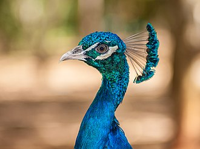

Home Wild life attractions Beaches Activities Heritage locations Hotel details Shop
...Wild Life Attractions In SriLanka...
1.Yala National Park

. Yala National Park (also known as Ruhuna National Park) is located in southern Sri Lanka and spans two provinces: Hambantota in the southern province and Monaragala in the Uva province. The park's entrance is in Palatupana, about 12 kilometers from Kirinda. Colombo is 305 kilometers from the Palatupana entry point.

...Wild Life...
. Yala National Park, of all the Sri Lankan National Parks, offers the best chance to see the island's diverse wildlife: Beautiful fantailed peacocks in magnificent blues and greens parade through the woods where monkeys hang, leap, and talk; elephants in the bush jungle; and the park's main attraction, leopardess, crossing the paths and wandering off into the thorny scrub jungle.
...2.Kumana National Park...
. Kumana National Park, also known as Yala East National Park, is located in the Ampara district of Sri Lanka's south-east, 391 kilometers from Colombo.


...Flora Of Kumana...
. The park's wetlands are surrounded by a dry zone tropical thorn forest. In the inland forest, the most common plants are Manilkara hexandra (Sinhalese "palu"), Hemicyclea sepieria, Bauhinia racemosa, Cassia fistula ("ehela"), Chloroxylon swietenia ("burutha"), and Salvadora persica species. In the Kumana villu, Sonneratia caseolaris is the dominant tree, while Typha angustifolia is the dominant reed. Terminalia arjuna trees dominate the Kumbukkan Oya's riverine woodlands. Some of the more common aquatic species found in the marsh include Ludwigia spp., Nelumbo nucifera, Nymphaea pubescens, Aponogeton spp., and Neptunia oleracea.


...3.Horton Plains...
. The Mahaweli, Kelani, and Walawe rivers all originate on the Horton Plains in Sri Lanka. In Sinhala, the plains are known as the Maha Eliya Plains. Here, stone tools from the Balangoda civilization were discovered. The lowlands' vegetation consists of grasslands interspersed with montane forest, as well as several indigenous woody plants. Large herds of Sri Lankan sambar deer can be found, as can other mammals, and the park is also an Important Bird Area, with numerous species that are not only native to Sri Lanka but also to the Horton Plains. Forest dieback is one of the park's most serious issues, and some researchers believe it is a natural occurrence.

...Tourist Attractions...
.World's End is the main attraction in Horton Plains, a well-known tourist destination. In the six months ending August 2009, Horton Plains National Park made a profit of Rs. 20.1 million (US$ 0.17 million). The highways Nuwara Eliya-Ambewela-Pattipola and Haputale-Boralanda, as well as the Ohiya and Ambewela train stations, all lead to the park.
...Special Wild Life Creatures...
Animal/Plant| Description | Image | Habitats | Food Habits | |
|---|---|---|---|---|
. SriLankan Leopard| . The Sri Lankan leopard is a leopard subspecies indigenous to Sri Lanka (Panthera pardus kotiya). Paules Edward Pieris Deraniyagala, a Sri Lankan biologist, first described it in 1956.
Since 2020, the IUCN Red List has classified the Sri Lankan leopard as vulnerable because the population is expected to be less than 800 adult individuals and is likely to decline.. |  . The Sri Lankan leopard can still be found on the island in both protected and unprotected areas. | . Carnivorous | | |
. Hora| . Hora trees, which are part of the rainforest canopy's emergent tree layer, can reach a height of 40-45 meters when fully mature. As a dominant tree in the canopy layer, this tree plays an important ecological role in rainforests. The tree's trunk is cylindrical and light brown in color. Make a fruit with two spreadable wings in the wind. This tree is also a good source of lumber for construction. | . SriLanka | . Autotrophic | | |
. Indian Peafowl| . Indian peafowl are the largest and heaviest members of the Phasianidae family. As far as we know, only the wild turkey gains significant weight. Despite having a slightly longer train than the male Indian variety, the green peafowl has a slightly lighter body mass. Within their native range, their size, color, and crest form distinguish them. |  | .Indian peafowls have been introduced to the United States, Mexico, Honduras, Costa Rica, Colombia, Guyana, Suriname, Brazil, Uruguay, Argentina, South Africa, Spain, Portugal, Madagascar, Mauritius, Réunion, Indonesia, Papua New Guinea, Australia, New Zealand, Croatia, and Lokrum Island. | . Omnivorous | |
. Sambar Deer| . Rusine antlers are large, rough antlers with simple brow tines and forked beams at the tip, resulting in only three tines. Antlers can grow to be up to 110 cm long in fully mature individuals. Only males have antlers, as do most deer. |  . The sambar can be found throughout much of South Asia, including Burma, Thailand, Indochina, the Malay Peninsula, Indonesia, Taiwan, and South China, including Hainan, as far north as the south-facing slopes of the Himalayas in Nepal, Bhutan, and India, and in mainland Southeast Asia, including Burma, Thailand, Indochina, the Malay Peninsula, Indonesia, Taiwan, and South China, including Hainan. It reaches 3,500 meters in the Himalayan foothills, Myanmar, Sri Lanka, and eastern Taiwan. | . Herbivorous | |